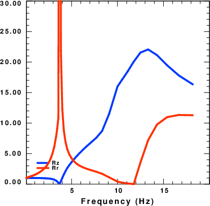

A paper by Bowden and Tsai (2017) discussed ground motion amplification for surface waves. They considered a
horizontally propagating surface wave in a uniform medium and also the same surface wave impinging on a basin. The
amplitude of the surface wave in the basin with respect to the incident signal was given a simple relation
in terms of the eigenfunctions of the two models, as
A/A_{ref} = (UIx/Ux_{ref}) sqrt [( c_ref A_0^{ref})/(c A_0 )]
which is given by Keilis-Borok et al (1989). The x takes on R, T or Z to represent the surface motion of the CPS
UR, UT or UZ eigenfunctions.
Bowden, D. C., and V. C. Tsai (2017), Earthquake ground motion amplification for surface waves, Geophys. Res. Lett., 44, 121–127, doi:10.1002/ 2016GL071885. Keilis-Borok, V. I. (1989). Seismic surface waves in a laterally inhomogeneous Earth, ed. V. I., Borok, Kluwer Academic Publishers, Dordrecht.
|  |